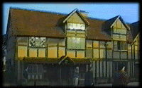

1/13/91

We arrived in Stratford-on-Avon today and I miss you miserably. It is bitterly cold and I feel a sickness coming on and I wish you were here more than anything.
{kind=link}
Sorry, enough of that. Stratford is beautiful - just like in all those documentaries of Shakespeare's life we see in Literature class. I saw his birthplace and wandered around the town for a while. While walking, I turned down a narrow alleyway and found an armory. A little man inside showed me around and explained what he did and how he restored and sold and traded all these weapons and armor that were hundreds of years old. It was fascinating. I wanted to buy this totally great cannon from the 1600s for our living room but it was L12,000 so I let it go.
{kind=link}
This evening, we saw "Love's Labour's Lost" at the Royal Shakespeare Theatre. Hated it. I really can't say why - it just seemed silly and boring to me. I started feeling guilty as I watched. I mean, here we are at the home of one of history's literary giants, watching one of his masterpieces performed by the Royal Company. What right do I have to dislike it? It just didn't seem fair.

By the way, you know that Tudor style you hate so much? The one used on all those nasty apartment complexes in the suburbs. Well, naturally everything here is in that style and I wish you could see it. I think you would love it. God, I wish you were here.